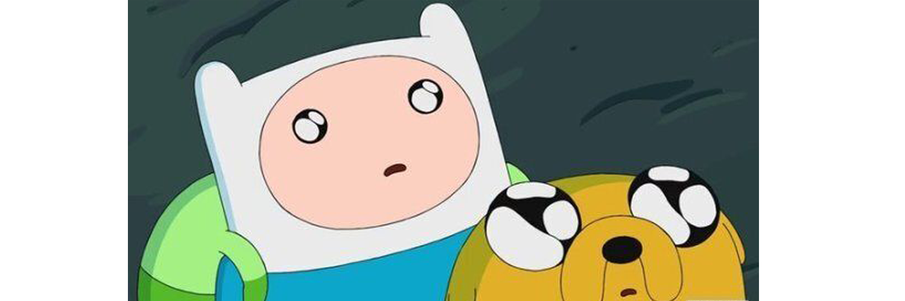

추구미 설정하는 법
- 내가 그 사람을 봤을 때 가장 닮고 싶은 부분이 많은 사람. 단 객관적으로 봤을 때 긍정적인 영향으로 닮고 싶은 것이어야 함. 객관적인 판단이 안 선다면 주변의 도움을 받기
- 그 사람을 봤을 때 질투나 시셈, 불안함 보다 마음이 따뜻해짐을 느껴야 함. 멋있다는 감정과 같은 긍정적인 반응이 나에게 일어나야 함.
- 나와 옷 취향, 외모의 일부분, 특징 등의 비슷한 부분이 있어야 함. 너무 다른 신체 구조나 성격, 취향을 가졌을 경우 나 스스로의 온전한 매력 이외에 완전히 바꿔야 한다는 강박이 생기기도 하고 너무 많은 걸 바꾸기엔 나 자신도 잃고 매우 힘든 과정일 것이기 때문이다.
추구미와 닮아가는 법
- 먼저 내가 왜 이 사람이 마음에 들고 닮고 싶은지 자세히 관찰하고 이유를 생각해본다.
- 관찰을 통해 정확하게 닮고 싶은 부분들과 이에 해당하는 내가 가지고 있는 부분과의 차이를 확인한다.
- 격차를 줄이기 위해 어떤 노력을 할 수 있는지 생각한다.
- 평소 생활습관에서 무리가 되지 않는 선에서 실천 가능한 계획을 세운다
- 절대 작심삼일은 금물. 매일 바뀌는 모습이 내 스스로 느껴지지 않더라도 한 번에 바뀌는 건 어려운 일이고 그럴 수도 없는 것이기에 꾸준히 하면 꼭 이루어진다는 마음가짐으로 계속 실천한다.
- 실천한지 일정 기간이 지난 후 추구미의 닮고 싶은 부분과 해당 부분의 내가 얼마나 변화했는지 관찰한다. 이전에 내 모습에서 추구미의 방향성으로 얼마나 더 나아갔는지 확인하고 한 단계 더 높은 실천 계획을 세워 꾸준히 실천한다.
- 반복